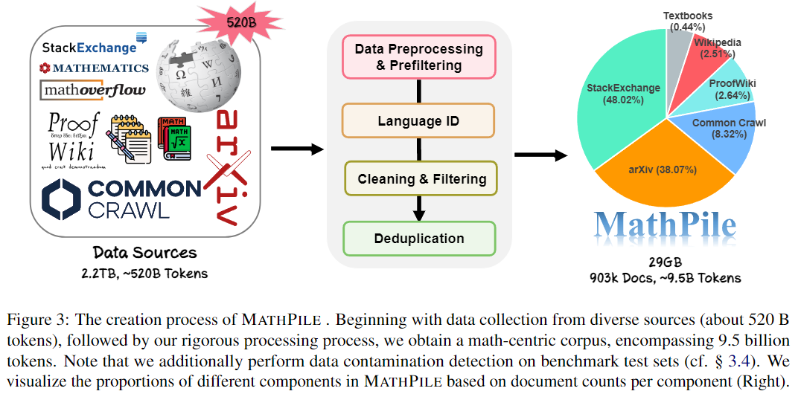

🚀 Brief Introduction
High-quality, large-scale corpora are the cornerstone of building powerful foundation models. In this work, we introduce MathPile a diverse and high-quality math-centric corpus comprising about 9.5 billion tokens. our work is significantly different from the previous work in the following characteristics:

- Math-centric: MathPile uniquely caters to the math domain, unlike general domain-focused corpora like Pile and RedPajama, or multilingual-focused ones like ROOTS and The Stack. While there are math-centric corpora, they're often either closed-sourced, like Google's Minerva and OpenAI's MathMix, or lack diversity, such as ProofPile and OpenWebMath.
- Diversity: MathPile draws from a wide range of sources: Textbooks (including lecture notes), arXiv, Wikipedia, ProofWiki, StackExchange, and Web Pages. It encompasses mathematical content suitable for K-12, college, postgraduate levels, and math competitions. This diversity is a first, especially with our release of a significant collection of high-quality textbooks (~0.19B tokens).
- High-Quality: We adhered to the principle of less is more, firmly believing in the supremacy of data quality over quantity, even in the pre-training phase. Our meticulous data collection and processing efforts included a complex suite of preprocessing, prefiltering, cleaning, filtering, and deduplication, ensuring the high quality of our corpus.
- Data Documentation: To enhance transparency, we've extensively documented MathPile. This includes a dataset sheet (see Table 5 in our paper) and quality annotations for web-sourced documents, like language identification scores and symbol-to-word ratios. This gives users flexibility to tailor the data to their needs. We've also performed data contamination detection to eliminate duplicates from benchmark test sets like MATH and MMLU-STEM.

We hope our MathPile can help to enhance the mathematical reasoning abilities of language models. See our paper for more technical details.